Institutional Capacity Workshop · ITC EU Youth Empowerment Project
Name, institution, one sentence: how do you see your connection to promoting The Gambia?
No right answer. Some of you will see it immediately. Some may wonder. That's exactly why all three tiers are in this room together.
What the data shows — inside and outside The Gambia. Every sector sees its numbers.
Four things you can do — for free, this month, without a new project or new budget.
How you know it's working — and what you commit to together before you leave the room.
Thursday 8:30–16:00 · Friday 8:30–13:00 · 13 institutions · 3 tiers of the ecosystem
Policy, oversight, national standards
Sector representation, creative producers
Service delivery, visitor experience
What did we find — and how did we find it?
Every sector sees its data before we talk about what to do.
Write on a card. Keep the card — don't share yet.
The facilitator will collect a few examples on the board.
Write on a second card. Keep both cards.
The facilitator will note these in a second column on the board — next to your first list.
Two reports. One story. The gap between what exists and what the world sees — that is the institutional opportunity.
Creative Industries Digital Baseline Assessment
Regional Benchmarking & Market Positioning Analysis
"Both reports used publicly available sources. No proprietary data. What they required was a systematic approach. You can do this yourselves."
Share of 239 international operator pages analysed
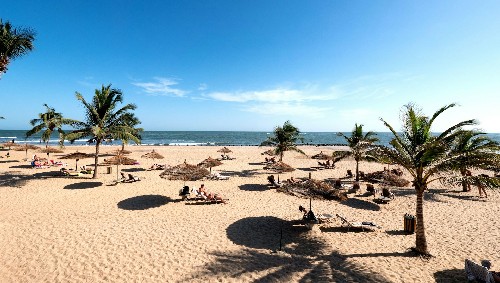
This is what 95% of operator pages show when they market The Gambia.
Share of operator pages that include creative & cultural content, by destination
The regional mean is 30.9. Senegal+Gambia packages score 33.9 — more than double pure Gambia tours.
What the score measures →
Gambian crafts exist. The score measures whether international buyers can find them.
Safety & Security is The Gambia's strongest sentiment theme relative to all regional peers. A genuine competitive advantage that is almost never foregrounded in marketing.
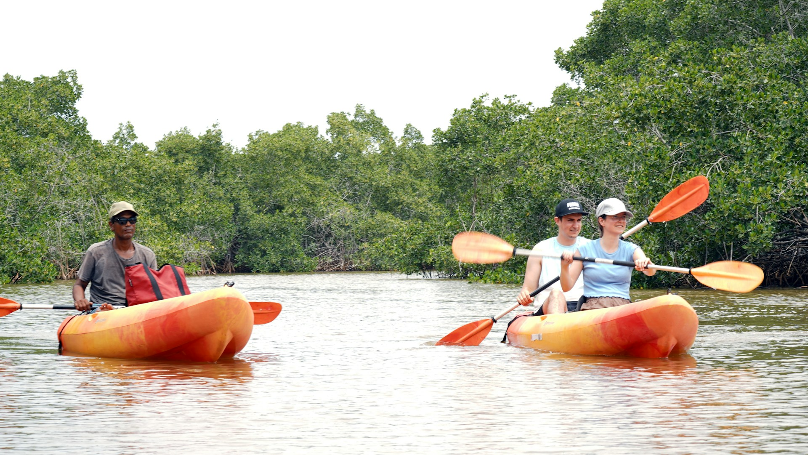
Tour operators score +0.32 sentiment — The Gambia's best digital ambassadors.
Minimal or no digital footprint · 7 sectors · 61 stakeholders assessed
Not an evaluation of what you have done — the starting point we have to work from. Pink = most ground to cover.
D1 identified a cohort demonstrating local models of success — but isolated from others in their sector.
The task is not to create something from scratch. It is to connect what already works to those who haven't found it yet.
No proprietary data required — publicly accessible sources, a systematic approach, and clear questions. Questions you now know how to ask.
Tool 1 — TripAdvisor destination page
← What visitors actually experience and miss
Tool 2 — Google search (as a tourist)
← What a buyer or journalist finds — and doesn't
In the next block — you set up your own Google Alert before we break for lunch.
Compare what you found with the person next to you. Then 3–4 people share one finding with the room. Facilitator places it in a column on the board.
Break 10:30–10:45 · Block 2 begins at 10:45
The evidence shows the gap. These four things help close it — for free, this month, without a new project or new budget.
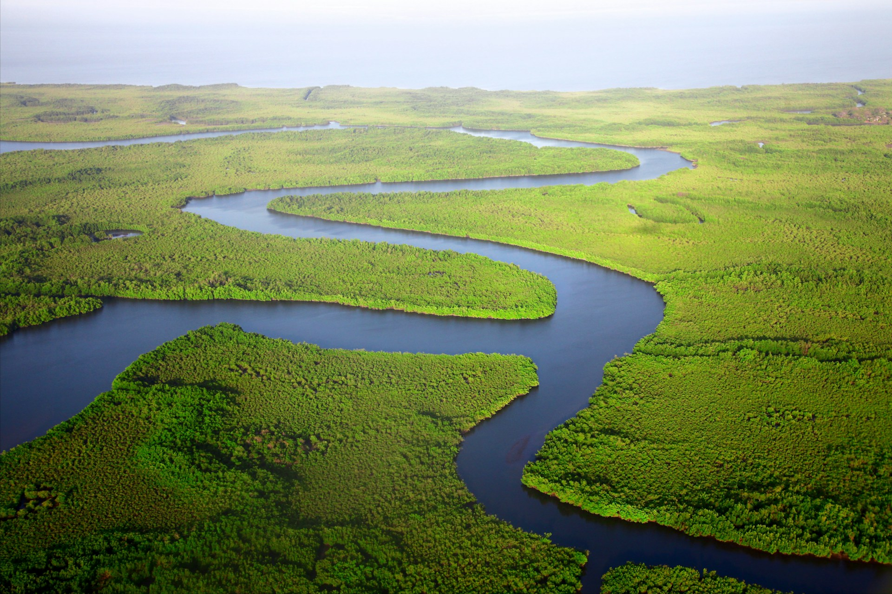
Read the landscape systematically. Know what visitors are saying and operators are showing — before your members ask.
Aggregate your sector so operators and tourists can find your members — one authoritative, maintained place.
Broker access SMEs can't reach alone — operators, journalists, trade fairs, national platforms.
Translate monitoring findings into one page, four times a year, and distribute to members.
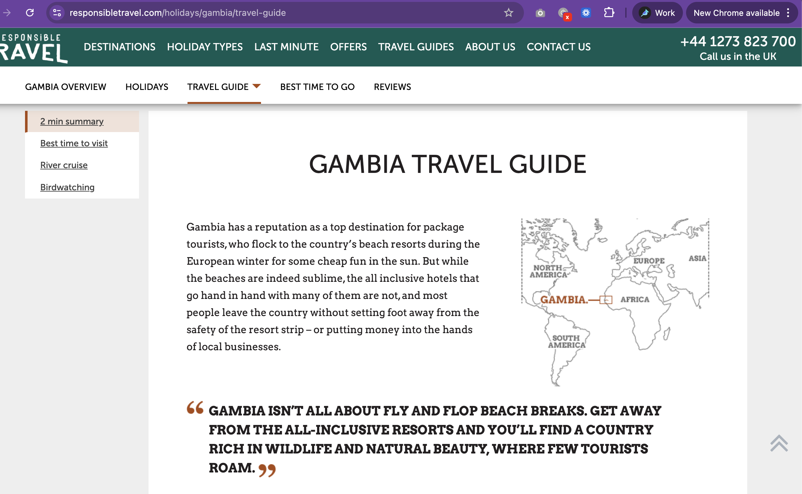
← One of the largest ethical UK operators. Creative industries: invisible.
Set for "Gambia tourism" + your sector. New content delivered to your inbox. Free, no expertise required.
Monthly scan: 20 most recent destination reviews. What themes recur? What's missing? What needs a response?
Quarterly: 5–10 operator websites. How is The Gambia described? Is your sector present or absent?
Track search interest in "The Gambia" vs "Senegal" over time. Are you gaining or losing ground?
Time required: 2 hours per month · No login, no budget, no technical skills
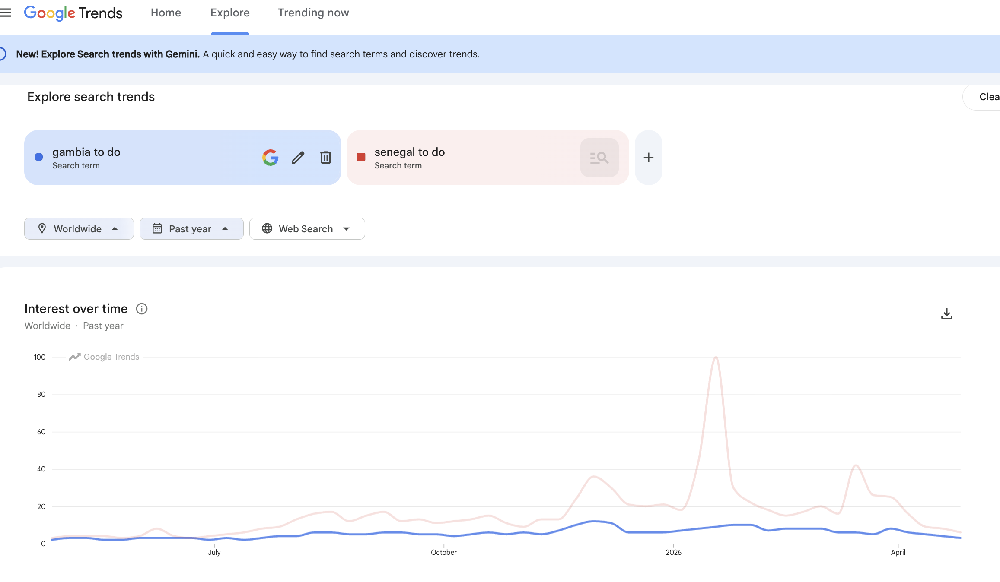
Publicly available, updated daily. The seasonal peaks reveal when source markets are planning — useful for timing campaigns and member briefings.
For institutions with websites — GT Board (visitthegambia.com) especially — Google Search Console shows exactly what people searched before arriving. Free once verified. Data flows automatically, no expertise needed.
Illustrative data — real GSC shows this structure for your actual site, updated daily
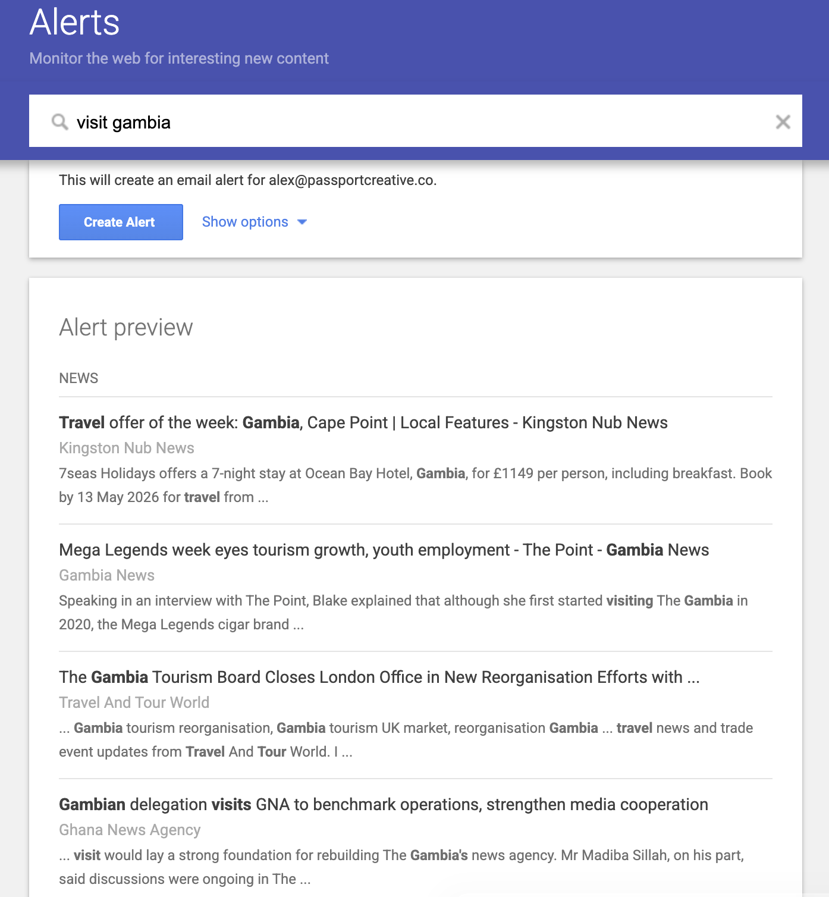
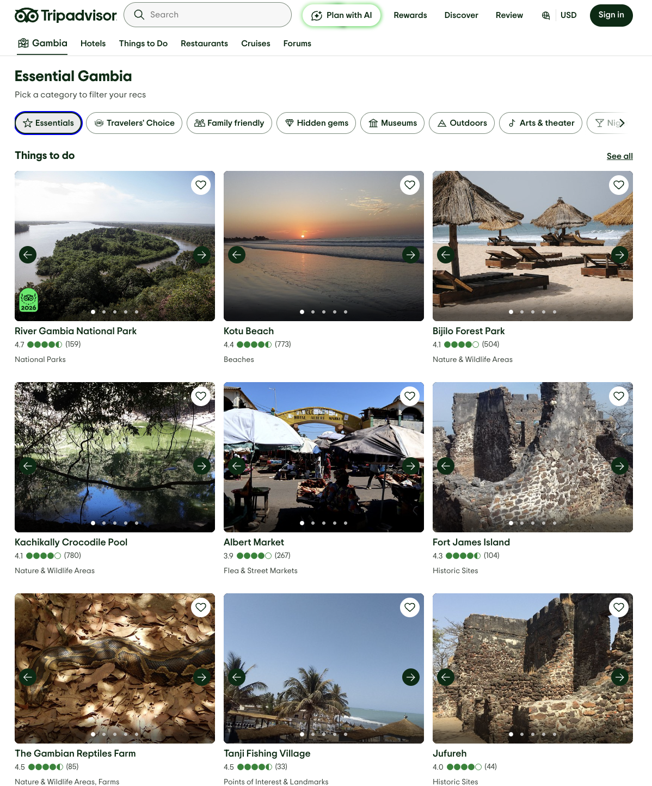
The top 9 things to do in The Gambia, according to TripAdvisor:
A 20-minute monthly scan tells you what's visible — and what your sector needs to do to appear here.
These indicators come directly from D2 Table 20. Ready-made — you don't need to design your own framework.
| Indicator | Baseline 2025 | Target 2026 |
|---|---|---|
| ITO creative tourism visibility | 52% | 60% |
| Average visitor sentiment score | +0.24 | +0.30 |
| Verified TripAdvisor reviews | current baseline | +25% |
| Average review rating | 4.06 / 5 | 4.20 / 5 |
One shared spreadsheet. Updated quarterly. These numbers tell you whether the four things are working.
A travel blogger loved The Gambia. She lists creative tourism as reason #8 of 12 to visit. She describes vibrant dance, music, handicrafts.
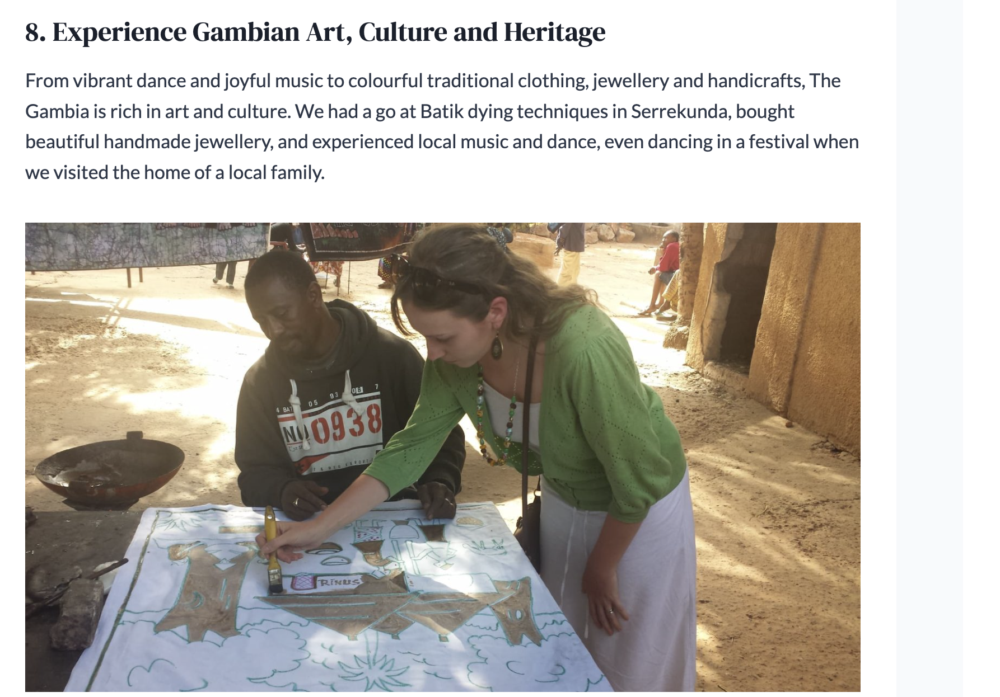
← Reason #8 of 12. Loved. Memorable. Not findable. Not bookable.
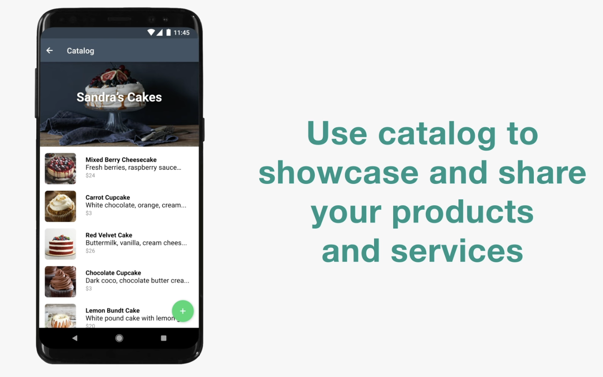
A WhatsApp Business catalogue is free, takes an hour to set up, and reaches buyers directly on the platform your members already use every day.
A functional creative industries section: bookable experiences, sector contacts, events calendar. One maintained page changes what operators find.
Names, photos, specialisms, WhatsApp. A tourist reads about "vibrant craft markets" — this is where they find who to contact.
Name, languages, specialisms, direct contact. Operators already search for guides — make sure yours are findable before competitors are.
Events, festivals, market dates — even as a public Google Sheet. Shared quarterly. Journalists and operators use these to plan itineraries.
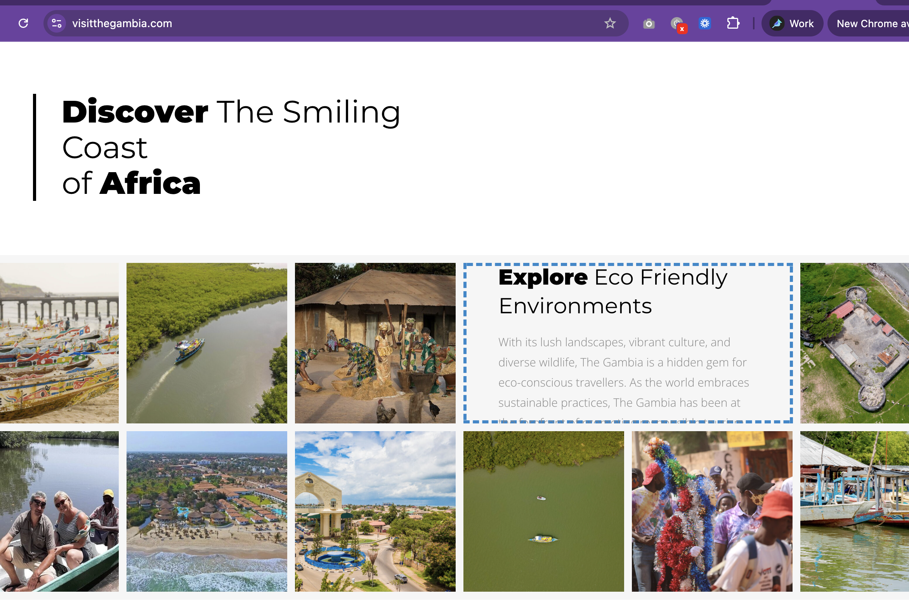
"Explore Eco Friendly Environments." The national portal. Creative industries: not on this page.
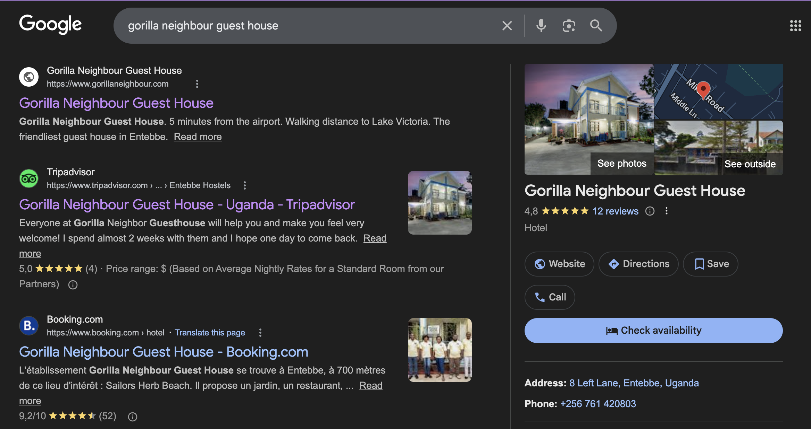
A Google Business Profile: name, photos, reviews, website, directions, direct call. Free. 30 minutes to create.
Is there currently one place where someone searching for your sector or members would find accurate, current information?
Show of hands. Facilitator notes the pattern.
Things 1 and 2 are about reading and organising.
Things 3 and 4 are about using what you know.
The gap between 'can do' and 'does' is where institutions matter most. Three things SMEs consistently need that skill-building cannot deliver on its own:
Being findable by the right audiences — international operators, travel journalists, and platforms they can't reach alone.
Being trusted by buyers and booking platforms. A trained SME still needs institutional endorsement to be taken seriously at scale.
Being linked to the distribution channels where international travelers actually make decisions — operator itineraries, OTAs, trade fairs.
D2 §5: Each of the five visitor personas has specific needs — multilingual content, booking functionality, structured itinerary inclusion — that SMEs struggle to meet alone. Institutional aggregation makes a systemic difference.
Individual SMEs — even successful ones — cannot introduce themselves to international operators, invite travel journalists, or join a trade fair delegation alone.
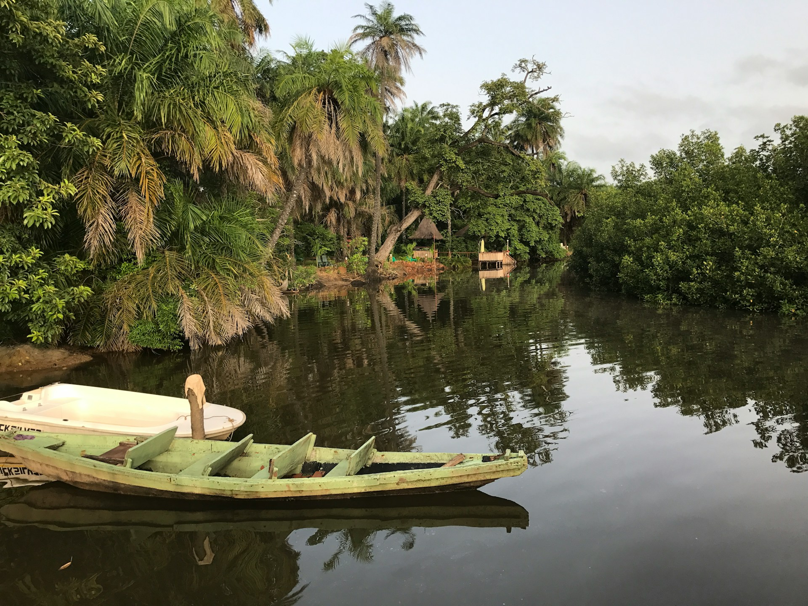
None of this can be done by individual SMEs. All of it is within institutional mandate.
Invite one international operator for a creative industries familiarisation visit. One trip can directly influence dozens of itineraries.
Two pages, written for operators. Ready-to-use content for their own marketing — removes the friction that keeps creative sectors absent from itineraries.
Broker two specific operator–SME introductions from participants in this training week. Low effort, immediate signal value.
The most durable support structures are those simple enough to maintain with existing staff and resources — not those requiring specialist skills or dedicated budget.
FAM trips, trade fair delegations, OTA introductions
Journalist visits, blogger hosting, content creator invites
Listing support, directory creation, VisitTheGambia updates
Shared photo library, bilingual materials, sector briefs for operators
SMEs know their own businesses. They don't know how The Gambia is being sold internationally, what operators are saying, or what trends are emerging in source markets.
You do — because you've been monitoring (Thing 1).
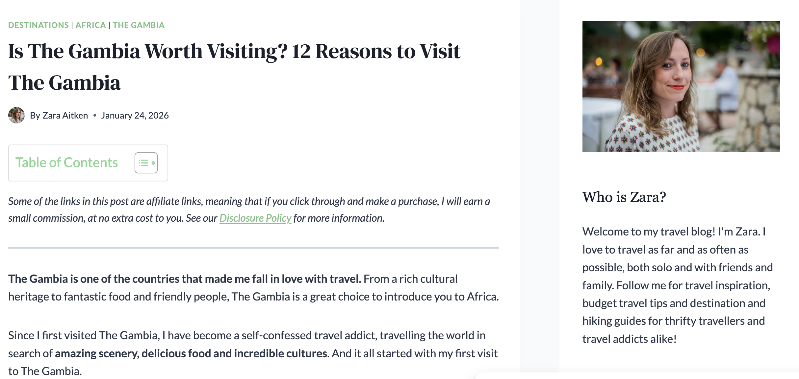
← This blogger wrote about The Gambia in Jan 2026. Did your members know? Could they have been featured?
Key findings from monitoring — 2–3 bullet points. What's new, what's changed, what's still missing.
Practical implications for members. Not analysis — direct guidance relevant to their businesses.
A concrete action members can take this month. Specific and checkable.
Tone: peers sharing intelligence, not management reporting down. Format: whatever your members actually read — WhatsApp, email, meeting agenda.
Google Alert digest, 20 TripAdvisor reviews, 5 operator pages. What's new, changing, or worth acting on?
What did you see that your members don't know? What trend is emerging? What gap is still there?
One paragraph per finding. Send by WhatsApp, email, or raise at your next sector meeting. Done.
2 hours per quarter. The value is in the consistency — not the comprehensiveness.
On the sheet provided, complete three questions:
GT Board produces one quarterly brief. Nine associations each distribute to their members. One document reaches the whole ecosystem — with 2 hours of work.
Not three months. Not six months.
One thing you will do in the next 30 days.
Specific and checkable — not "improve our digital presence" but "set up a Google Alert for our sector by [date]." Within your current mandate and budget.
Today was about what each of you can do individually. Friday shifts focus.
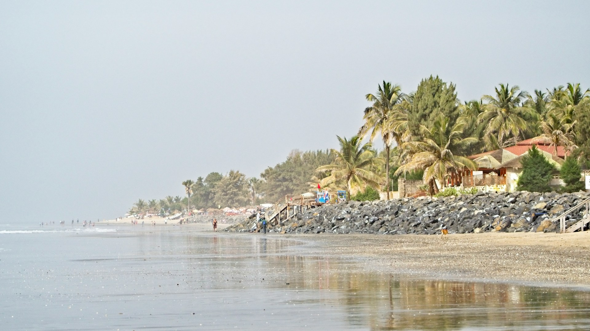